속초고 쌤기부
이렇게 써요
수업에서 본 것을 조각으로 모으고, 조각으로 생기부 글을 짓고, 나이스에 한 번에 넣는 데까지. 역할별로 필요한 부분만 골라 읽으세요.
처음 들어가기
계정은 관리자가 만들어 드려요. 처음 받은 인증코드로 들어가면 비밀번호부터 바꿔요.
- 관리자에게 받은 아이디와 초기 인증코드로 로그인해요.
- 비밀번호를 8자 이상으로 바꿔요. 바꾸기 전에는 다른 화면에 들어갈 수 없어요.
- 교사는 홈, 담임만 맡은 선생님은 우리 반 홈, 학생은 학생 홈이 첫 화면이에요.
- 교과를 맡았다면 먼저 내 수업에서 담당 과목과 반을 정해요. 그래야 세특 메뉴에 학생이 나와요.
학교 처음 세팅 관리자
- 계정 관리에서 교사를 한 명씩 또는 교사명부 엑셀로 넣어요(담임 학년 · 반 포함).
- 학생 등록에서 나이스 명렬 양식(연번 · 학년 · 학과 · 반 · 번호 · 성명)이나 학생명렬표(엑셀 · CSV)를 그대로 올려요. 전 학년 한 파일도 돼요(1,500명까지).
- 편제표 · 과목 개설로 올해 과목을 정하면 선생님들이 내 수업에서 담당 과목을 골라요.
- DB를 바꿨다면 관리 현황 → DB 업데이트 확인에서 빠진 SQL 번호가 없는지 봐요.
화면 둘러보기
왼쪽 사이드바는 묶음으로 나뉘어 있어요. 맡은 역할에 따라 보이는 묶음이 달라요.
| 묶음 | 메뉴 | 보이는 사람 |
|---|---|---|
| 업무 | 학사일정 · 담당 학생 · 상담 기록 · 학생 등록 | 교사 모두 |
| 세특 | 내 수업 · 조각 모으기 · 수행평가 · 글 짓기 · 글 모아 보기 | 교과 교사 |
| 동아리 | 내 동아리 · 조각 모으기 · 글 짓기 · 글 모아 보기 | 교사 모두 |
| 특색활동 | 내 프로그램 · 새 프로그램 · 초안 검토 · 프로그램 일정 · 봉사 확인서 | 교사 모두 |
| 협업 | 내가 든 협업방(바로 메뉴) · 새 협업방 · 협업방 모두 보기 — 교과 · 학년이 달라도 함께 | 교사 모두 |
| 도구 | 나이스 입력 · 학생 리포트 · 문장 보관함 · 생기부 팁 · 프롬프트 보관함 · 문의 게시판 — 생기부를 쓰고 내보낼 때 곁에 두는 것 | 교사 모두 |
| 담임 | 우리 반 홈 · 누가기록 · 글 짓기 · 받은 초안 · 글 모아 보기 (+ 업무 끝에 학생 기록 · 봉사 받은함 · 성적 업로드 · 수능 최저 · 야간 자율학습) | 담임 |
| 관리 | 관리 현황 · 오류 처리 · 초안 생성 현황 · 학생부 점검 · 자료 보존 · 계정 관리 · 과목 개설 · 편제표 · 감사 로그 | 관리자 |
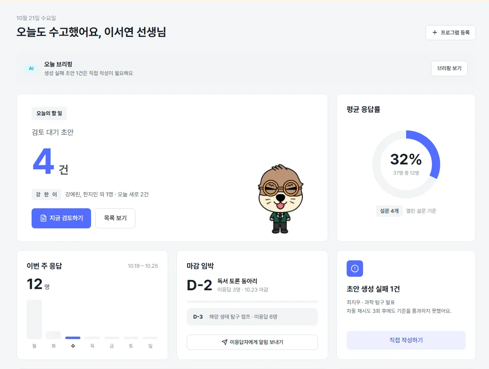
개인정보 · AI 원칙
AI를 많이 쓰지만, 학생 정보는 이렇게 지켜요.
AI에는 가명만
이름 · 학번 대신 가명ID(S001…)를 보내요. 올린 파일 속 이름 · 학번도 가린 뒤 보내요.
파일은 남기지 않아요
조각 · 수행평가 자료 파일은 AI가 읽은 요약만 남기고 파일은 저장하지 않아요. 학생 제출 원본은 보존 기간이 지나면 지워져요.
기록은 추가만
확정본 · 상담 · 조각 · 누가기록은 지우지 않고 새 버전으로 쌓여요. AI 원안도 따로 보관해 비교할 수 있어요.
확정은 선생님이
AI가 쓴 글은 언제나 초안이에요. 반 전체 글 쓰기도 임시 저장만 하고, 확정 · 나이스 저장은 선생님이 직접 눌러요.
기록이 만들어지는 흐름
세특 · 동아리 · 담임 기록 모두 같은 순서로 만들어요.
- 조각 = 수업에서 본 한두 줄 메모, 활동 자료 요약, 수행평가 요약, 차시 메모. 학기 내내 쌓아요.
- 글 짓기에서 조각을 골라 AI가 목표 바이트에 맞춰 글을 써요. 선생님은 고치고 검사한 뒤 확정해요.
- 확정한 글만 나이스 입력으로 보내요.
내 수업 세특
세특을 쓰기 전에 한 번만 정해 두면 돼요.
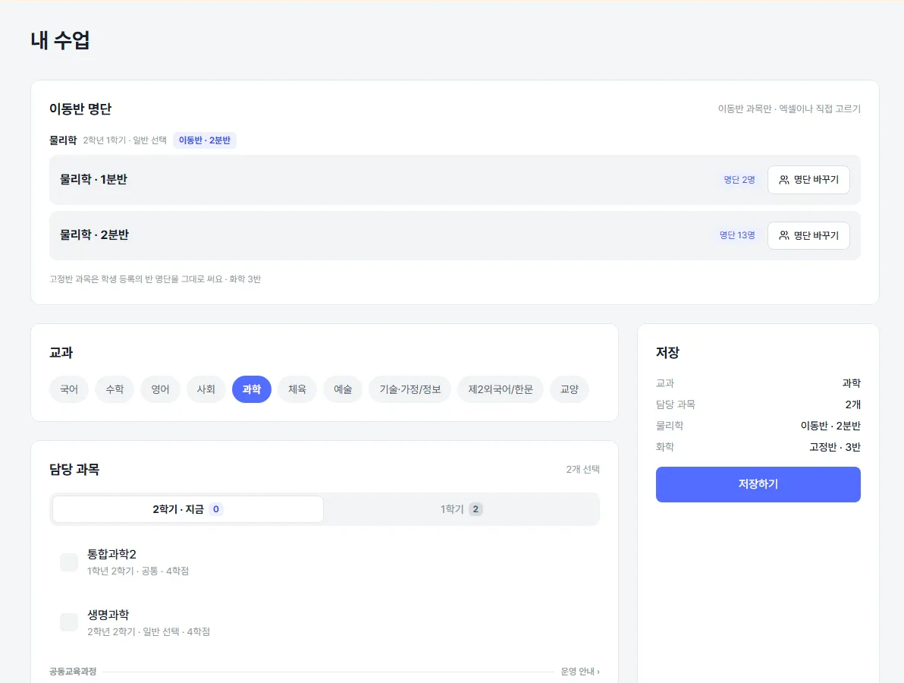
담당 과목 정하기
- 위의 학기 탭 2학기 · 지금 1학기에서 학기를 골라요. 지금 학기가 먼저 열려요.
- 편제표 과목을 체크하고 고정반 | 이동반을 정해요.
- 반은 모두 꺼진 채로 시작해요. 고정반은 맡은 반 칩만 고르고, 이동반은 + 분반으로 분반을 만들어요.
- 고정반에 반이 여럿이면 조각 모으기 · 수행평가 · 글 짓기 탭이 반마다 따로 나와요.
이동반 분반 명단
- 명단 올리기 → 엑셀로(명단_양식.xlsx — 나이스 명렬 양식 그대로: 연번 · 학년 · 학과 · 반 · 번호 · 성명. 나이스에서 내려받은 파일도 그대로) 또는 직접 고르기.
- 직접 고르기: 학년 · 반 칩으로 찾아 체크 → n명 저장.
- 다른 분반에 있던 학생을 고르면 "2분반 → 옮김"으로 보이고 저장할 때 옮겨져요.
공동교육과정
- 담당 과목 칸 맨 아래 ＋ 공동교육과정 수업 추가 → 종류(학교 간 | 온라인) · 과목 · 학년 · 학기.
- 우리 학교 | 다른 학교 탭. 다른 학교 학생은 한 명 추가하거나 엑셀에서 붙여 넣어요.
- 다른 학교 학생은 로그인하지 않고 명단에만 있어요. 나이스 입력은 그 학생의 학교가 해요.
조각 모으기 세특 · 동아리 · 담임
수업 중 본 것을 여러 학생에게 한 번에 남겨요. 바이트는 신경 쓰지 않아도 돼요.
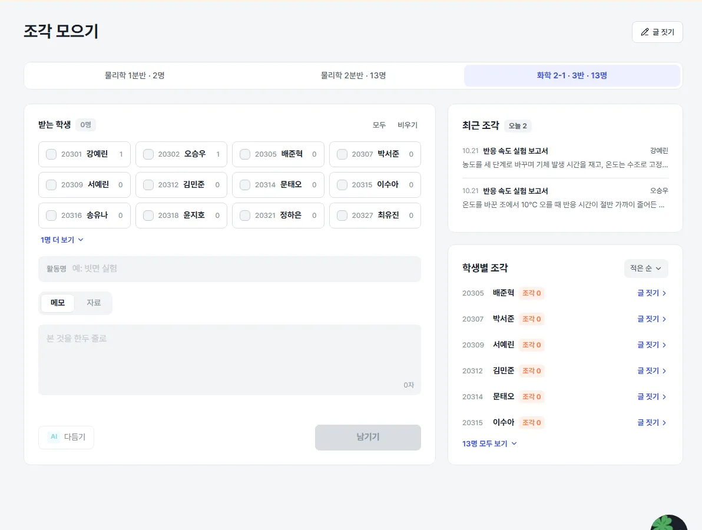
- 위 탭에서 반(분반)을 골라요.
- 받는 학생을 체크해요. 모두 비우기도 있어요. 칸의 숫자는 그 학생의 조각 수예요.
- 활동명을 적어요(꼭 필요해요). 예: 빗면 실험.
- 메모 탭: 본 것을 한두 줄로 적어요. AI 다듬기를 누르면 전 · 후를 보여 주고 이걸로 바꾸기를 눌러야 바뀌어요.
- 자료 탭: 활동지 · 보고서 · 발표 자료 · 사진(PDF · 이미지 · hwpx · pptx · txt)을 올리고 읽기 → 요약이 메모 칸에 들어가요. 고쳐 써도 돼요.
- n명에게 남기기. 활동명과 학생은 그대로 남아 이어서 남길 수 있어요.
공통 활동 · 차시별 활동
- 공통 활동 · 차시별 활동은 조각을 만드는 기능이라 조각 모으기에만 있어요(글 짓기에는 없어요). 담임은 누가기록 화면, 행발 공통 활동만 담임 글 짓기 행발 탭에 있어요.
- 받는 학생 위 공통 활동 카드 → ＋ 공통 활동: 반 전체가 같이 한 활동(예: 체육대회 준비, 실험 보고서)을 활동명 · 날짜 · 설명으로 등록해요.
- 활동을 누르면 자료 올리기에서 방식을 골라요.
- 각각 따로: 학생 파일을 한꺼번에 올리면 파일 이름의 학번 · 이름으로 맞추고, 모르는 파일은 학생을 골라 줘요.
- 합본 나누기: 한 PDF를 번호순(한 사람 몇 쪽) 또는 페이지 지정(쪽 구간 · 학생)으로 나눠 학생 칸에 붙여요.
- 모두에게 하나: 활동지 · 계획서 · 단체 결과물 하나를 한 번만 읽고, 아직 조각 없는 모든 학생에게 같은 조각을 넣어요.
- ✦ 조각 한꺼번에 만들기 → 학생마다 "[활동명] …" 조각이 공통 활동 칩으로 들어가요.
- 차시별 활동: 수업 계획을 올리면 메모 칸에서 차시를 눌러 활동명 · 날짜를 채워요.
수행평가 세특 NEW
수행평가를 등록하고 학생 자료를 올리면 AI가 학생마다 읽어 요약을 조각으로 넣어 줘요.
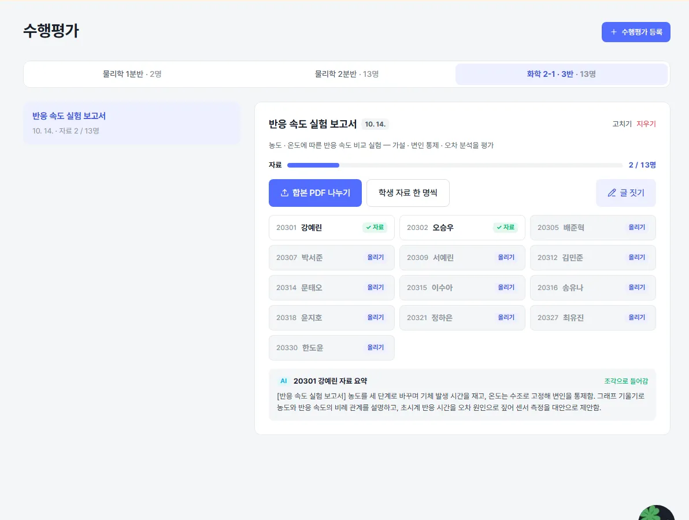
등록
- ＋ 수행평가 등록을 눌러요. 계획서로 채우기 (AI) — 평가 계획서(PDF · HWPX · PPTX · 사진)를 올리면 이름 · 날짜 · 평가 내용 · 기준을 채워 줘요(여러 개면 고르거나 모두 등록). 같은 과목에서 가져오기 — 같은 과목 다른 선생님 · 내 다른 반 수행평가를 골라 채워요.
- 이름(40자) · 날짜 · 평가 내용 · 기준(500자, 선택)을 적어요. 평가 기준은 AI가 자료를 읽을 때 참고해요.
학생 자료 올리기
- 학생 자료 한 명씩: 학생을 고르고 파일 하나 → 올리고 읽기.
- 학생 칸의 올리기를 눌러도 그 학생으로 바로 열려요.
- ✓ 자료 칸을 누르면 아래에 AI 요약이 보여요.
합본 PDF 나누기
반 전체 보고서를 한 PDF로 스캔했다면, 브라우저에서 학생별로 나눠요. 큰 파일도 돼요.
| 방식 | 쓰는 법 |
|---|---|
| 번호순 | 한 사람 몇 쪽인지 ＋/− 로 정하면 명렬표 번호순으로 나눠요. "13명 = 26쪽 딱 맞음"처럼 맞는지 알려 줘요. |
| 페이지 지정 | 시작 쪽 – 끝 쪽 – 학생을 한 줄씩 적어요. ＋ 구간 추가. 겹치거나 범위를 벗어나면 막아요. 결석생은 빼면 돼요. |
→ n명 자료 만들기를 누르면 "3 / 13명 읽는 중"처럼 차례로 읽어요.
글 짓기 세특 · 동아리 · 담임
한 학생씩, 조각을 골라 AI로 쓰고 고친 뒤 확정해요.
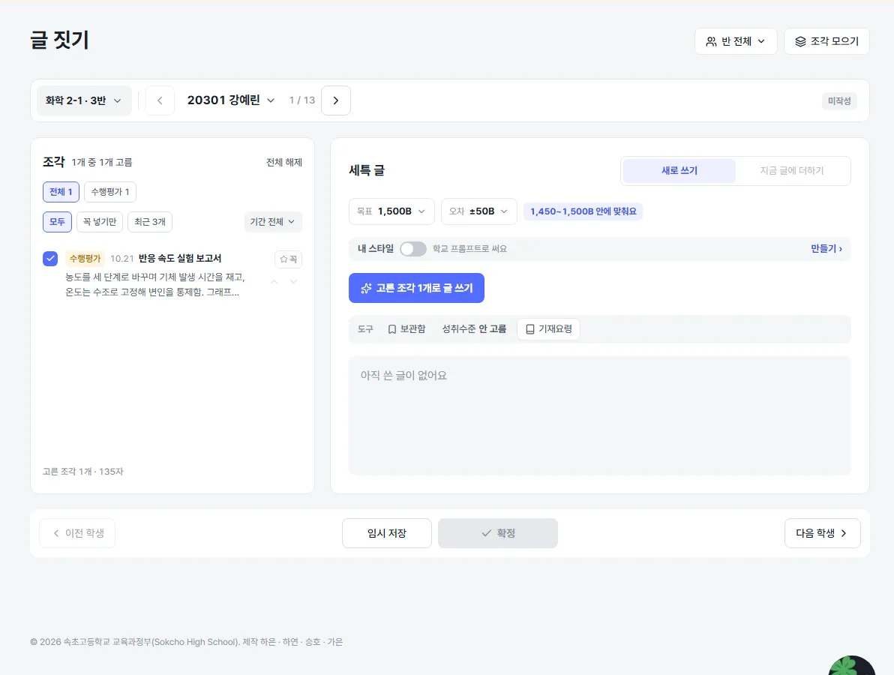
기본 순서
- 위 줄에서 반과 학생을 골라요. ‹ › 로 넘기고, 상태 칩(미작성 · 작성 중 · 확정)이 보여요.
- 왼쪽 조각 칸에서 넣을 조각을 체크해요. 꼭 넣기만 최근 3개 · 기간 고르기 · ★ 꼭.
- 목표(예: 1,500B)와 오차(±30 · ±50 · ±100)를 정해요. 한글 1자 = 3바이트, 나이스 한도를 넘지 않아요.
- 고른 조각 n개로 글 쓰기. AI가 첫 글 → 빠진 조각 넣기 → 분량 맞추기 순서로 써요.
- 게이트 칩을 확인해요. ✓ 분량 1,482 / 1,500B · 게이트 통과 실패하면 다시 맞추기.
- 고치고 검사한 뒤 아래 임시 저장 또는 ✓ 확정.
새로 쓰기 | 지금 글에 더하기
더하기는 지금 글을 그대로 잠가 두고, 새로 고른 조각으로 뒤에 이어 써요. 남은 바이트만큼만 써요.
내 스타일
만들기 ›에서 영역(세특 · 창체 · 행발)마다 내 프롬프트(2,000자)와 레퍼런스 생기부(최대 3개)를 넣어요. 구조 · 문장 길이 · 서술어만 본뜨고 내용은 가져오지 않아요.
도구 줄 NEW
주 버튼 아래에 늘 보여요(예전 "더보기").
| 도구 | 하는 일 |
|---|---|
| 근거 보기 | 문장마다 어떤 조각에서 왔는지 보여 줘요. |
| 다른 버전 | 뜻 그대로 / 새롭게 다시 쓴 글을 나란히 보고 골라요. |
| 보관함 | 문장 보관함의 좋은 문장을 찾아 넣어요. |
| 성취수준 | 학생 성취수준(A~E 또는 상 · 중 · 하)을 정하면 글의 평가 수준이 맞춰져요. |
| 키워드 메뉴판 | 행발에서 생활 키워드 다섯 묶음을 골라 써요. |
| 기재요령 | 학교생활기록부 기재요령 원문을 쪽수와 함께 찾아봐요. |
역량 확인
글 아래에 학업 · 진로 · 공동체 문장 수와 빠진 평가항목이 바로 보여요. 문장 색으로 보기 ›는 결과를 저장해 같은 글이면 AI를 다시 부르지 않아요.
수정 요청
"더 구체적으로" · "진로와 잇기" · "줄여서 핵심만" 칩이나 200자 요청 → 전 · 후 비교 → 이걸로 바꾸기.
자동 검사
바이트 · 이름 · 학번 · 금칙어 · 맞춤법 · 반복 · 근거보다 높은 평가를 봐요. 금칙어 · 실명 · 한도 초과는 확정이 안 돼요.
문단 나누기 · 반 전체
- 문단 나누기 켬/끔: 조각별로 나눠요 — 같은 조각에서 온 문장끼리 한 문단, 직접 쓴 문장은 앞 문단에 붙어요(근거가 없으면 활동명 · "또한" 같은 이어지는 말로). 문단 사이는 줄바꿈 하나, 빈 줄은 없어요. 보기만 나누고 저장 · 바이트 · 나이스에는 한 문단으로 들어가요.
- 머리의 반 전체 ⌄ → 반 전체 글 쓰기(조각은 있고 글은 없는 학생을 AI가 쓰고 임시 저장만) · 반 전체 검사 · 시트용 복사 · 엑셀로 받기.
- 공통과목은 1 · 2학기 합산 500자 안내가 나와요. 한도: 세특 · 창체 1,500B, 행발 900B.
글 모아 보기
세특 · 창체 · 행발 · 누가기록을 한 표로 봐요. 갖고 있던 생기부 글도 여기서 한 번에 옮겨 와요.
보기 · 내보내기
- 과목 · 분반을 고르고 확정만 | 전체로 걸러요(처음엔 확정만).
- 줄마다 복사, 또는 모두 복사 · 엑셀로 받기.
- 내가 맡은 학생 글만 보여요.
엑셀로 올리기 NEW
- 엑셀로 올리기 → 양식 받기: 이 반 학번 · 이름(지금 글까지) 채워진 생기부글_양식.xlsx.
- "생기부 글" 칸에 한글 · 엑셀에 써 둔 글을 붙여 넣고 올려요.
- 줄마다 넣음 새 버전 못 넣음 · 바이트를 보고 n명 임시 저장.
지금 글은 이전 버전으로 남아요. 확정은 글 짓기에서 해요.
업무 — 학사일정 · 학생 · 상담
학사일정
- 목록 | 이번 주 | 이번 달로 바꿔 봐요. 온라인 교무실(노션) 일정은 노션 태그로 자동으로 들어와요.
- ＋ 일정 추가: 이름 · 날짜 · 대상 학년 · 메모. 올린 사람만 고치고 지워요.
담당 학생
- 이름 · 학번으로 찾거나 "2학년 3반 여학생"처럼 말로 찾아요(AI로 찾기).
- 학생을 누르면 기록 · 역량 보기를 한곳에서 봐요.
상담 기록
- 학생을 찾고 상담 기록 시작. 질문 추천으로 물어볼 질문 3개를 받아요.
- 교과 교사는 본인 기록만, 담임은 반 학생 전체를 봐요. 학생은 볼 수 없어요.
학생 등록
- 양식 받기 → 나이스 명렬 양식(연번 · 학년 · 학과 · 반 · 번호 · 성명) + 성별 · 계열 → 명단 업로드 → 등록 요약 → 등록하기.
- 나이스에서 내려받은 명단(위 제목 줄이 있어도 돼요), 나이스 학생명렬표, 예전 학번 · 이름 양식(엑셀 · CSV)도 그대로 올려도 돼요. 성별 칸이 없으면 모두 남 모두 여로 고르고 학생마다 눌러 바꿔요.
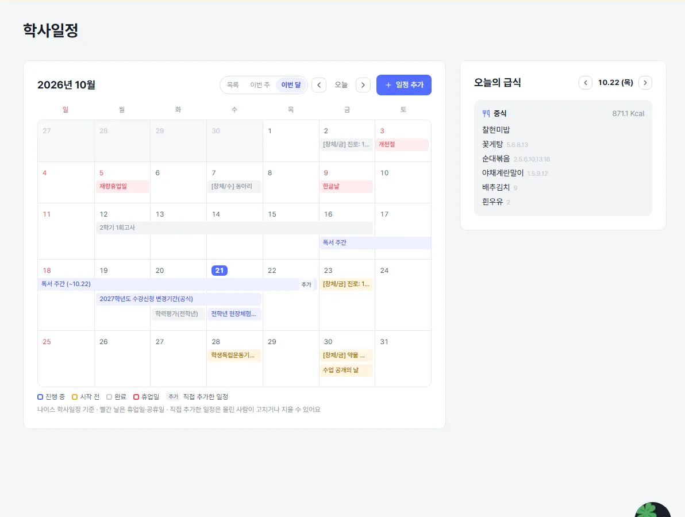
나이스 입력
확정한 글을 나이스 화면에 한 번에 채워요. 설치는 북마크 하나면 돼요(PC 크롬). 사이드바 도구 묶음에 있어요.
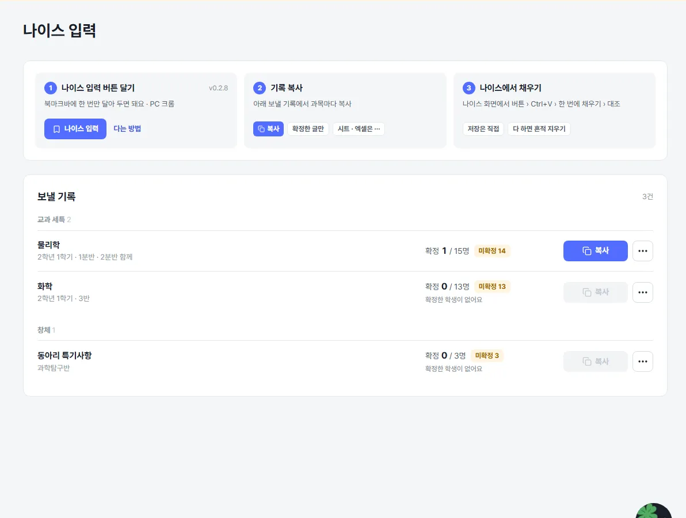
- 버튼 달기(처음 한 번): 나이스 입력 버튼을 크롬 북마크바로 끌어다 놓아요. 안 되면 다는 방법 → 주소 복사 → 새 북마크 주소에 붙여 넣기. 버전이 바뀌면 다시 달아요.
- 복사: 보낼 기록은 교과 세특이 반 · 분반마다 한 줄이에요(예: 물리학 · 1분반, 화학Ⅱ · 2반). 그 반 줄의 복사를 눌러요. 확정한 글만 들어가요.
- 채우기: 나이스 화면에서 북마크 버튼 → Ctrl+V → 반 고르기 · 덮어쓰기/이어쓰기 → 한 번에 채우기. 이동반은 반을 고르지 않고 나이스처럼 분반 학생이 학번순 한 목록으로 나와요(버튼 v0.2.9부터).
- 대조: 채운 뒤 자동으로 일치 · 다름 · 못 찾음을 보여 줘요. 다르면 다른 것만 다시 채우기.
- 저장은 선생님이 나이스에서 직접 눌러요. 끝나면 흔적 지우기로 클립보드를 비워요.
학생 리포트
우리 반 · 내 분반 · 내 동아리 학생 기록을 학생마다 A4 한 장으로 뽑아요.
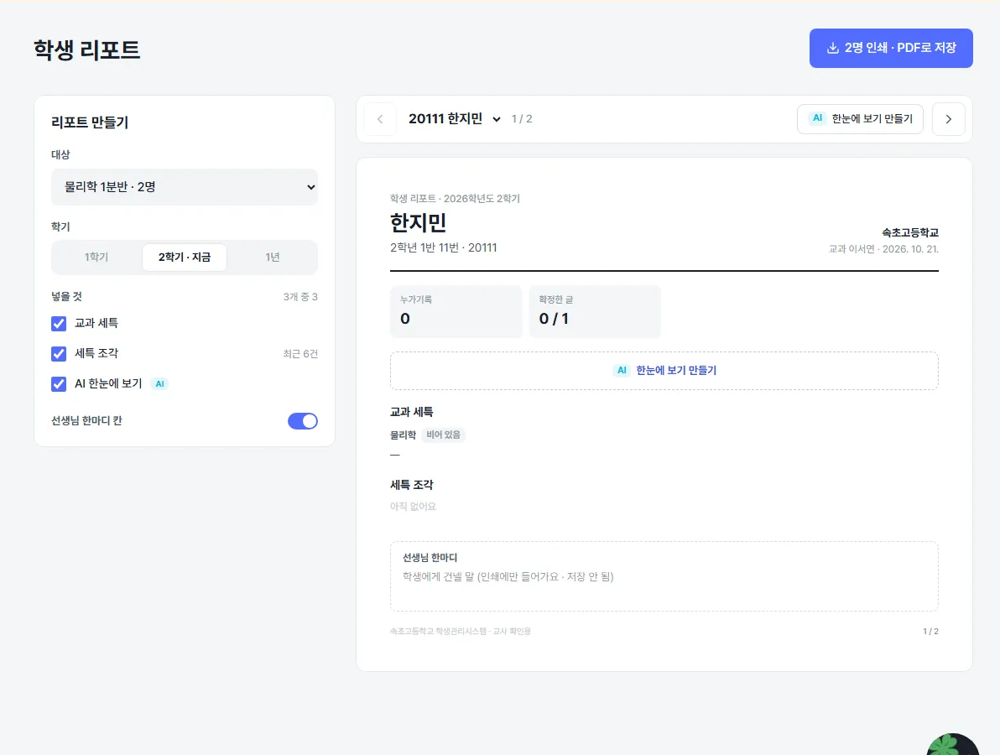
- 대상(우리 반 / 내 분반 / 내 동아리)과 기간(1학기 · 2학기 · 1년)을 골라요.
- 넣을 것: 교과 세특 · 창체 · 행발 · 누가기록 · 특색활동 · 봉사 · 상담(처음엔 꺼짐) · AI 한눈에 보기.
- 한눈에 보기 만들기로 강점 · 자란 점 · 다음에를 정리하고 "선생님 한마디"를 적어요.
- n명 PDF로 저장 또는 인쇄. 한마디 · AI 결과는 저장하지 않아요. 상담 글은 AI에 보내지 않아요.
문장 보관함 · 생기부 팁
문장 보관함
- 글에서 문장을 골라 보관 → 영역 · 태그.
- 글 짓기 도구 줄의 보관함에서 찾아 넣어요. 이름 · 학번은 빼고 저장돼요.
생기부 팁
- DDAR 구조 · 증거어 · 서술어 LV1~3 · AI 티 줄이기 · 체크리스트 등 처음 글 11개가 있어요.
- 분류 칩과 찾기, 내용 복사.
- ＋ 팁 올리기로 선생님 누구나 올려요. 학생 이름 · 학번이 있으면 올라가지 않아요.
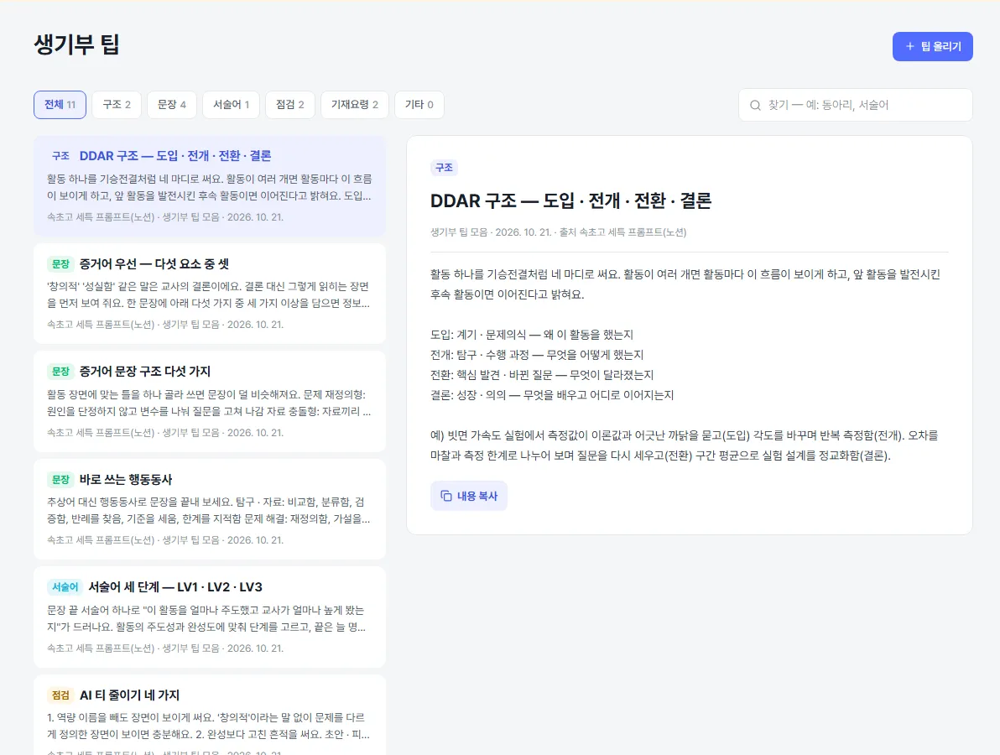
협업방
사이드바 협업. 동학년부가 아니어도, 교과가 달라도 방을 만들어 선생님과 함께 준비해요. 내가 든 방은 사이드바에 바로 나와요.
방 · 멤버
- 새 협업방 → 이름 · 소개 → 초대에서 선생님을 골라요(이름 · 부서로 찾기). 멤버 누구나 초대할 수 있어요.
- 방장은 방 이름 고치기 · 내보내기 · 방 닫기, 멤버는 방 나가기.
올리기 · 가져가기
- ＋ 올리기 → 메모(멤버 누구나 고침) · 수행평가 · 차시별 활동 · 프롬프트 · 자료(링크).
- 수행평가 · 프롬프트 보관함 글에서 협업방에 올리기로 바로 올려요.
- 수행평가 등록 창 협업방에서 가져오기, 방 프롬프트는 내 스타일에 넣기. 가져가도 원본은 그대로예요.
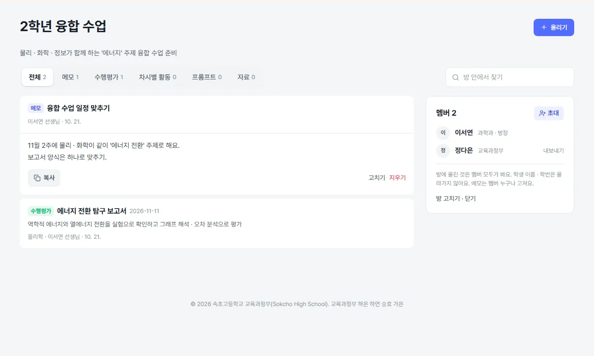
프롬프트 보관함
도구 › 프롬프트 보관함. AI 쓰기에 줄 지시문(프롬프트)을 모아 두고 나눠 써요.
세 탭
- 공식 — 교육과정부가 올린 과목별 학교 프롬프트 + 앱이 실제로 쓰는 기본 프롬프트(읽기 전용).
- 공유 — 선생님들이 공개한 프롬프트. 좋으면 ★ 별 주기, 별 많은 순으로 보여요.
- 내 프롬프트 — 내가 올린 것. 나만 보기 · 공개를 고를 수 있어요.
쓰기
- 내 스타일에 넣기 → 그 영역(세특 · 창체 · 행발) 글 짓기 내 스타일이 이 프롬프트로 바뀌고 켜져요(2,000자까지).
- ＋ 프롬프트 올리기 → 영역 · 과목 · 제목 · 내용. HWPX · PPTX · TXT 문서에서 불러올 수 있어요.
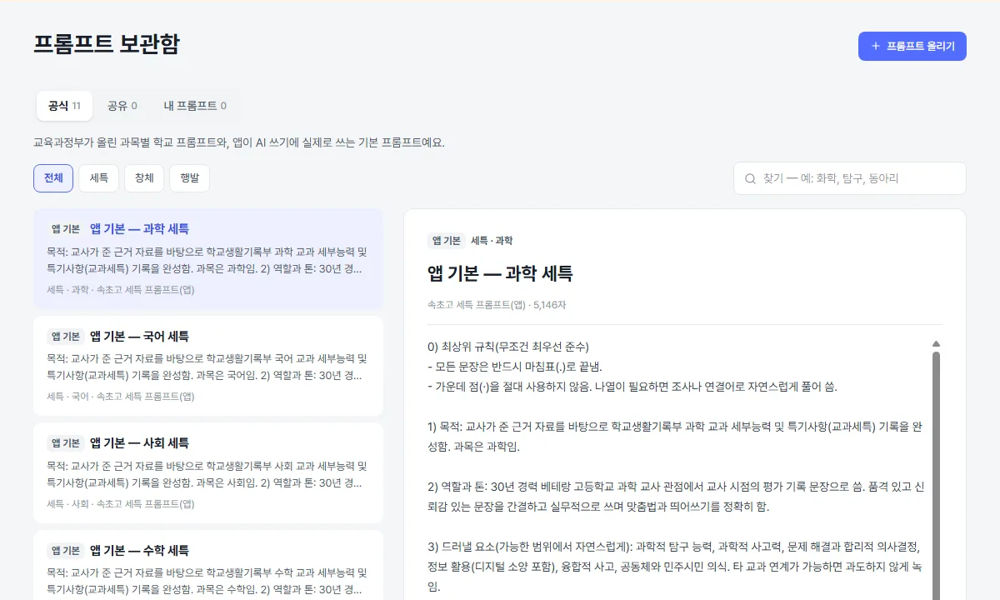
문의 게시판
도구 › 문의 게시판. 쓰다가 막힌 점을 묻고, 교육과정부가 단 답이 여기 쌓여요. 묻기 전에 찾기부터 해 보세요.
묻기
- ＋ 문의하기 → 분류 · 제목 · 질문. 학생 이름 · 학번이 있으면 올라가지 않아요.
- 답이 달리기 전에는 내 질문을 고치거나 지울 수 있어요.
찾아보기 · 답하기
- 분류 칩 · 답변 완료 / 답변 대기 · 찾기로 좁혀요.
- 관리자는 글에서 답하기 · 답 고치기.
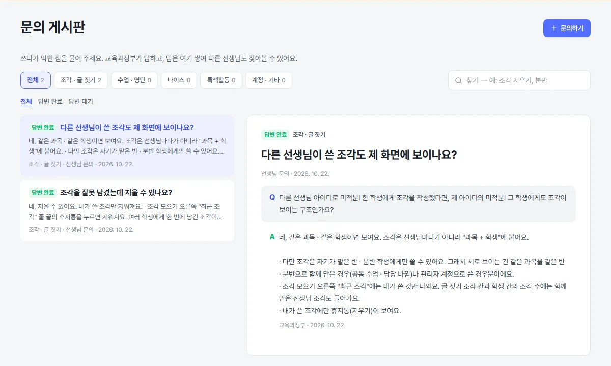
동아리
- 내 동아리: 동아리 만들기, 부원은 명단 양식 엑셀로 넣어요.
- 조각 모으기: 세특과 같은 화면이에요. 남긴 조각은 동아리 누가기록이 돼요. [메모 | 자료]도 돼요.
- 글 짓기 · 글 모아 보기: 세특과 같은 순서로 동아리 특기사항을 써요.
특색활동 프로그램
학생이 낸 서류(보고서 · 활동지 · 소감문)와 교사 메모로 AI가 학생별 초안을 만들고, 담당 교사가 검토 · 확정하면 담임에게 전달돼요.
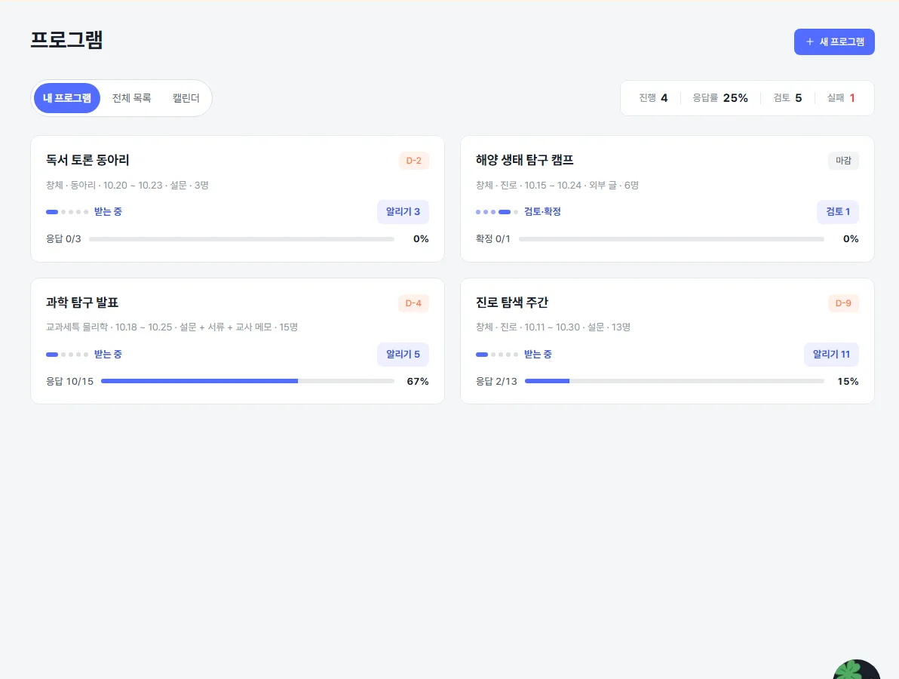
새 프로그램 만들기
- 기본 정보: "계획서로 채우기"(PDF · HWPX · 이미지)로 자동 입력하거나 직접 적어요. 기록 영역 · 분량 · 기간.
- 근거 자료: 학생 제출 서류 · 교사 메모 (함께 골라도 돼요) / 외부 글(혼자만).
- 대상 학생: 반 칩 · 검색 · 엑셀.
- 확인 → 등록하기.
| 단계 | 누를 버튼 |
|---|---|
| ① 받는 중 | 미제출 n명에게 알리기 · 지금 마감 |
| ② 마감 | 초안 만들기 n명 |
| ③ 초안 만들기 | 검토하러 가기 · 실패 k건 다시 만들기 |
| ④ 검토 · 확정 | 자동 검사 · 근거 · 원안 비교를 보고 확정 → 담임 받은 초안으로 자동 전달 |
학생 메모 · 다시 쓰기
학생 줄을 눌러 교사 메모를 적고 메모 반영해 다시 쓰기. 외부 기관 글은 직접 넣기로 AI 없이 넣어요.
명단 · 합본 PDF
학생별 현황에서 명단 양식 업로드. 자료 관리 → 합본 PDF 나누기(구간 지정 / 몇 쪽씩, 제안 받기로 첫 쪽 이름을 찾아 줘요).
봉사 확인서
- 확인서 올리기(여러 장) → 읽고 학생 매칭.
- 기관 · 시간 · 활동내용을 확인해요. 활동내용은 50자(150B) 검사, 넘으면 줄이기.
- 이 줄 보내기 → 담임 봉사 받은함의 확인 대기로 가요.
담임 — 우리 반 · 누가기록 · 행발
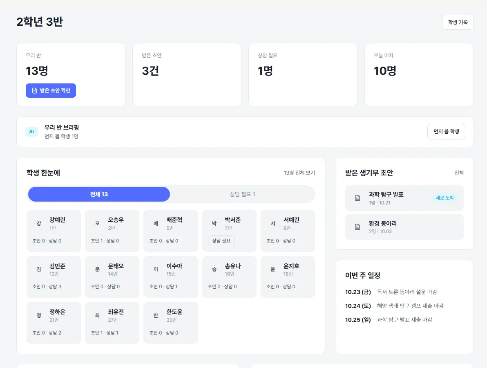
누가기록
담임의 조각 모으기예요. 받는 학생은 우리 반, 영역(자율 · 자치 | 진로)을 고르고 날짜와 함께 남겨요. [메모 | 자료] 모두 돼요.
글 짓기
탭 행발 | 자율 · 자치 | 진로. 누가기록과 받은 특색활동 초안이 조각으로 들어와요. 행발 목표는 900B, 도구 줄의 키워드 메뉴판을 써요.
받은 초안
프로그램 선생님이 확정한 특색활동 초안이 학생별로 모여요. 담임에게 오는 건 특색활동 초안과 봉사뿐이에요.
학생 기록
학생마다 초안 · 상담 · 야자 · 누가기록 · 봉사 탭과 역량 보기를 한곳에서 봐요.
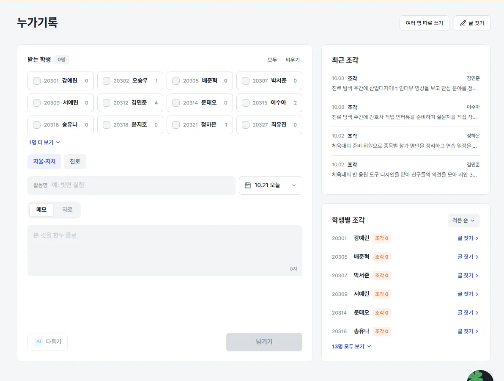
담임 업무
봉사 받은함
확인 대기 → 확인. 활동내용을 고치면 바꾸고 확인(원문은 남아요). 학생별 누적 · 반 총 시간.
성적 업로드
엑셀이나 성적표 사진 · PDF를 올려요. AI는 열 제목이나 번호 · 등급만 읽어요. 검증(명단에 없음 · 번호 중복 · 범위) 뒤 반영.
수능 최저
대학별 기준을 넣고(모집요강 문구로 기준 채우기) 충족 · 근접 · 미충족을 판정 → 상담 명단 만들기.
야간 자율학습
학생 신청을 승인하고 출석 체크. 출결 살펴보기와 확인 메시지 초안 → 확인 후 보내기.
관리 메뉴 관리자
관리자는 모든 권한을 가진 교사예요. 사이드바 맨 아래 관리 묶음(처음엔 접힘)에 있어요.
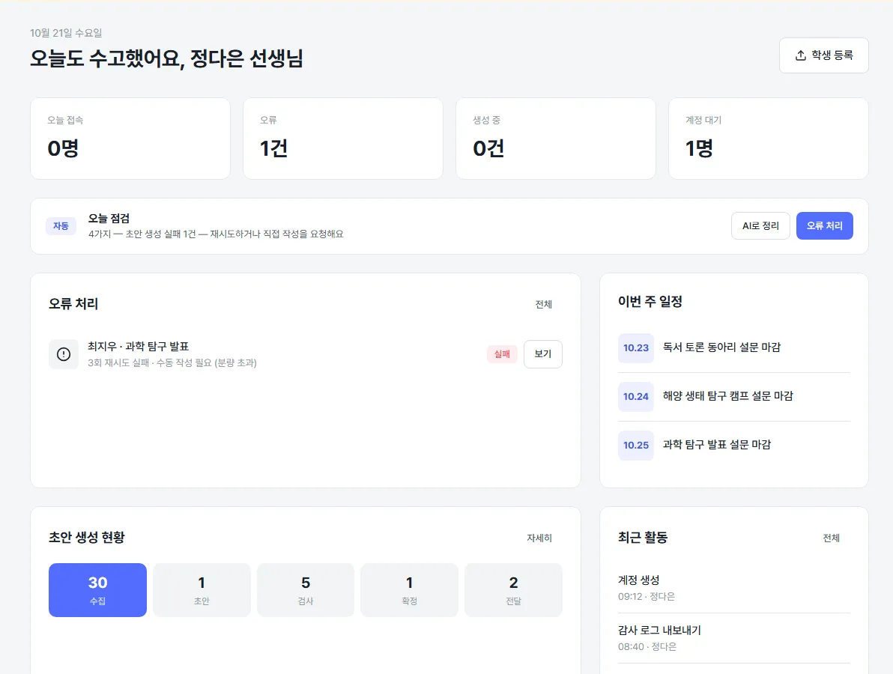
| 메뉴 | 하는 일 |
|---|---|
| 관리 현황 | 오늘 접속 · 계정 대기 · 오류 · 최근 활동. 학교 설정에서 성취수준 단계(A~E / 상 · 중 · 하). 맨 아래 DB 업데이트 확인: Supabase에 아직 넣지 않은 SQL 번호를 알려 줘요. |
| 오류 처리 | 초안 생성 실패 → 모두 다시 시도 / 수동 작성 요청. |
| 초안 생성 현황 | 프로그램별 생성 · 실패 건수와 원인. |
| 학생부 점검 | 학년 · 영역별 확정 · 작성 중 · 미작성 · 확인 필요 건수. 인쇄용 보고서(결재란) · 엑셀. 글과 이름은 보이지 않아요. |
| 자료 보존 | 학생 원본 파일 · 읽은 글의 보존 기간, 파기 예정 목록, 한 번 미루기(30일). 지운 파일은 되살릴 수 없어요. |
| 계정 관리 | 교사 한 명 또는 교사명부 엑셀로 여러 명 추가. |
| 과목 개설 · 편제표 | 학생 과목 신청용 과목 열기, 학년 · 학기별 편제표와 담당 교사 없는 과목. |
| 감사 로그 | 누가 무엇을 했는지 기간별로. 이름 대신 가명ID와 건수만 남아요. |
학생 화면
학생에게 안내할 때 보세요. 학생 하단 탭: 제출 · 성적 · 홈 · 생기부 · 메뉴.
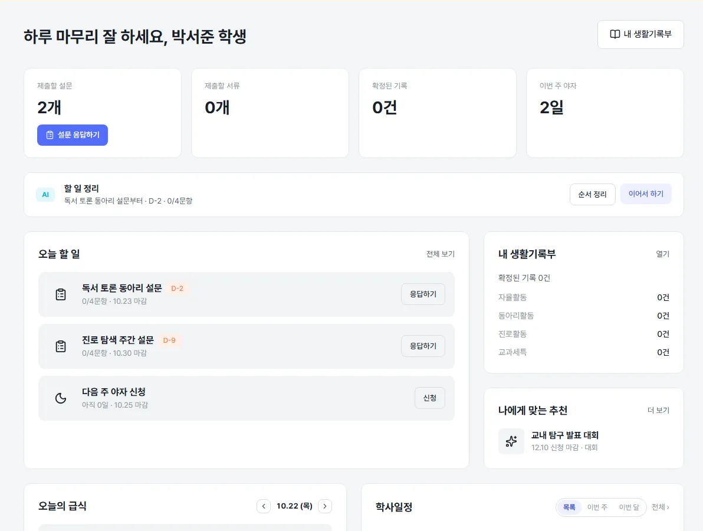
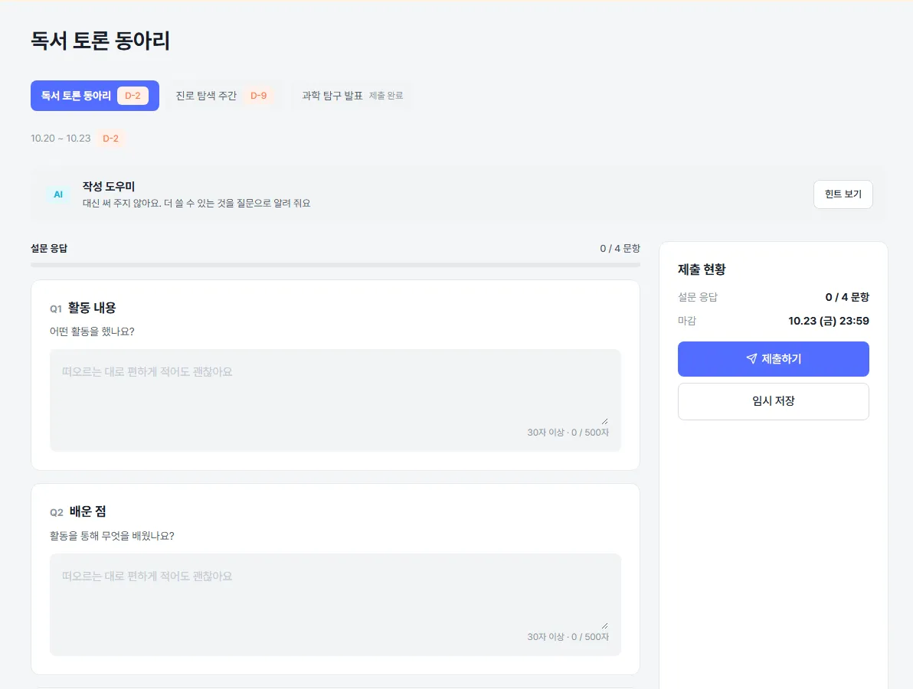
서류 제출
열린 프로그램을 골라 서류(PDF · HWPX · PPTX · JPG · PNG, 20MB)를 올리면 제출이 끝나요. 마감 전에는 지우고 다시 올릴 수 있어요.
성적 · 최저
내신 · 모의고사 추이, 목표 대학 최저 충족 여부와 공부 계획.
생활기록부
확정된 지난 학년도 기록만 보여요. 올해 쓰는 중인 글은 보이지 않아요.
추천 활동
희망 진로에 맞는 도서 · 대회 · 특강 · 활동을 추천 받기 → 담기.
야자 신청
요일 · 시간을 골라 신청 → 담임 승인. 이번 주 출석을 봐요.
과목 신청
과목을 담고 점검하기로 학점 · 조합을 확인한 뒤 신청하기.
영랑이 · 메뉴 · 내 정보
영랑이
오른쪽 아래 캐릭터 버튼이에요. 사용법 문의와 AI로 만들기(안내 문자 · 가정통신문 · 상담 요약 · 회의 메모 정리). 결과는 초안으로만 보여 주고 보내지 않아요.
메뉴 순서
⠿ 메뉴 순서 바꾸기 → 묶음 사이 · 묶음 안으로 끌어서 옮기기 → 완료. 처음대로로 되돌려요. 내 정보에서 메뉴 숨기기도 돼요.
내 정보
사진 바꾸기 · 비밀번호 바꾸기(8자 이상) · 메뉴 보이기 · 순서 · 로그아웃. 휴대폰은 하단 메뉴 탭에서 들어가요.
자주 묻는 질문
한글 · 엑셀에 써 둔 생기부를 옮기고 싶어요.
글 모아 보기에서 엑셀로 올리기 → 양식 받기 → 글 붙여 넣고 올리기. 학생마다 임시 저장으로 들어가요.
학생 명단을 한 번에 넣고 싶어요.
관리자가 학생 등록에서 나이스 명렬 양식(연번 · 학년 · 학과 · 반 · 번호 · 성명)이나 학생명렬표를 그대로 올리면 돼요. 이미 있는 학번은 "중복"으로 건너뛰어요.
저장하려니 "DB 업데이트(00xx)가 필요해요"가 나와요.
새 기능의 표가 아직 없어서예요. 관리자가 관리 현황 → DB 업데이트 확인에 나온 번호의 SQL을 Supabase SQL Editor에서 실행하면 돼요.
다른 선생님과 같이 준비하고 싶어요.
사이드바 협업 › 새 협업방을 만들고 초대하세요. 교과 · 학년이 달라도 돼요. 수행평가 · 프롬프트는 글에서 '협업방에 올리기'로 바로 올리고, 수행평가 등록 창의 '협업방에서 가져오기'로 가져가요.
AI가 쓰는 말투 · 구조를 바꾸고 싶어요.
도구 › 프롬프트 보관함에서 공식 · 공유 프롬프트를 골라 '내 스타일에 넣기'를 누르세요. 글 짓기 내 스타일이 켜져요.
물어볼 곳이 있나요?
도구 › 문의 게시판에 올리세요. 먼저 찾기로 지난 문답을 보면 바로 답을 찾을 때가 많아요.
세특 메뉴에 학생이 안 나와요.
내 수업에서 담당 과목과 반(이동반은 분반 명단)을 정했는지 확인하세요. 학기 탭이 맞는지도 보세요.
나이스 입력에서 [복사]가 회색이에요.
확정한 학생이 없어서예요. 글 짓기에서 확정하거나, 글 모아 보기에서 확정 여부를 확인하세요.
북마크 버튼에서 이동반이 본반(1반 · 2반)으로 나눠져 나와요.
옛 버튼(v0.2.8 이하)이에요. 나이스 입력 화면에서 버튼을 다시 달고, 과목 줄의 [복사]를 다시 눌러 붙여 넣으세요. v0.2.9부터 이동반은 반 고르기 없이 한 목록이에요.
문단 나누기를 켜면 문단 사이가 비어 보여요.
지금은 문단 사이에 빈 줄 없이 줄바꿈 하나만 들어가요. 나이스 · 복사에는 늘 한 문단으로 들어가요.
AI가 쓴 글이 목표 바이트보다 짧아요.
게이트 칩의 다시 맞추기를 누르거나 조각을 더 골라 다시 쓰세요. 조각이 적으면 분량을 채우려고 내용을 지어내지 않아요.
올린 자료 파일은 어디에 저장돼요?
조각 · 수행평가 자료는 저장하지 않아요. AI가 읽은 요약만 조각으로 남아요. 원본은 선생님 컴퓨터에 보관하세요.
확정한 글을 고치고 싶어요.
글 짓기에서 고친 뒤 다시 확정하면 새 버전으로 남아요. 예전 버전은 지워지지 않아요.
합본 PDF 쪽수가 학생 수와 안 맞아요.
번호순 대신 페이지 지정으로 학생마다 쪽 구간을 적으세요. 비어 있는 학생은 빼면 돼요.
AI가 꺼져 있다고 나와요.
관리자가 AI를 끈 상태예요. 메모 · 확정 · 나이스 입력은 그대로 되고, 글 파일(hwpx · pptx · txt)은 앞부분을 그대로 넣어요.
찾는 말이 있는 부분이 없어요. 다른 낱말로 찾아 보세요.